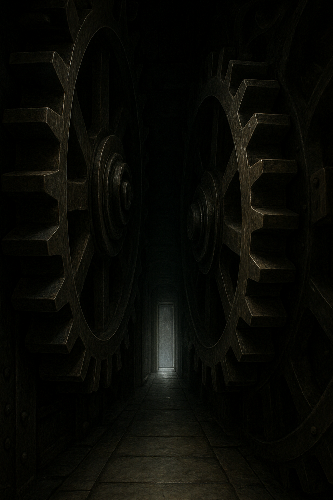

Du zwängst dich zwischen den beiden riesigen Zahnrädern hindurch. Der Spalt ist so eng, dass du kaum atmen kannst. Das Metall ist kalt und ölig, und du hörst das bedrohliche Knarren der Mechanik über dir. Jeden Moment könnten die Zahnräder wieder zu rotieren beginnen.
Nach einer quälend langen Zeit erreichst du das Ende der Passage. Vor dir öffnet sich ein schmaler Korridor, der in zwei Richtungen führt. Links hörst du ein leises Summen, rechts erkennst du eine silber schimmernde Tür, fast wie eine Illusion.